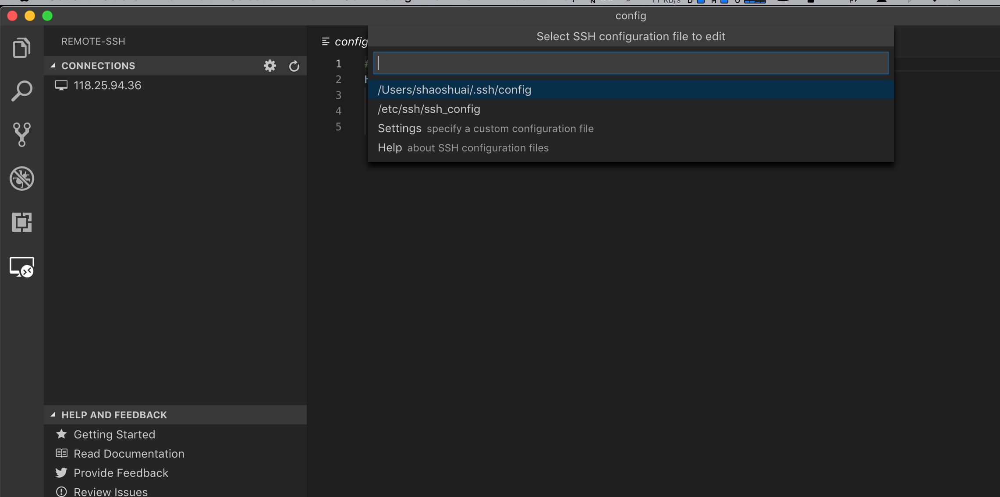
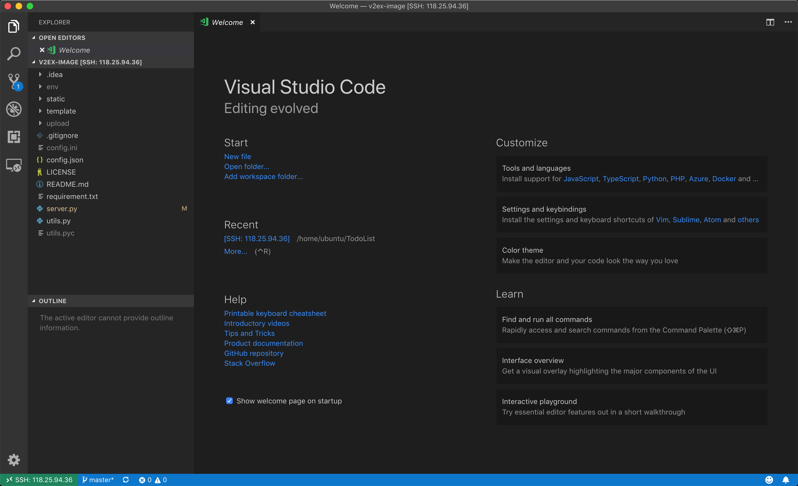

vscode remote ssh初体验
目前（2019.5.18）Vscode remote功能还不是正式的功能，需要下载vscode insiders版本。
下载链接：https://code.visualstudio.com/insiders/
vscode remote支持三种连接方式：SSH、WSL、Container。
我使用的是ssh方式，下面是安装步骤：
- 首先需要配置ssh，linux（macos）需要生成本机的ssh公钥，
输入ssh-keygen -t rsa -b 4096，一路回车就ok，生成的公钥文件在~/.ssh/id_rsa.pub，然后拷贝到远程主机上，linux（macos）可以用下面的命令ssh-copy-id 远程主机用户名@远程主机IP地址，然后输入IP地址就行。 - 在vscode的插件商店里安装remote-ssh插件，安装好后，左边会新增Remote-SSH按钮
- 然后配置vscode，点击vscode远程栏，然后点击设置⚙️选择
.ssh/config

填写相关配置
# Read more about SSH config files: https://linux.die.net/man/5/ssh_config
Host I'm robot
HostName 118.25.94.36
User ubuntu
- 分别把HostName和User填入远程主机的地址就能用啦，然后点击侧栏主机标志就能打开远程界面了～不过腾讯云主机的1M小水管好慢。。

参考连接：
- 本文链接：https://ssdemajia.github.io/2019/05/18/vscode-remote%E5%88%9D%E4%BD%93%E9%AA%8C/
- 版权声明：本站所有文章除特别声明外，均采用 CC BY-NC-SA 3.0 CN 许可协议。转载请注明出处！